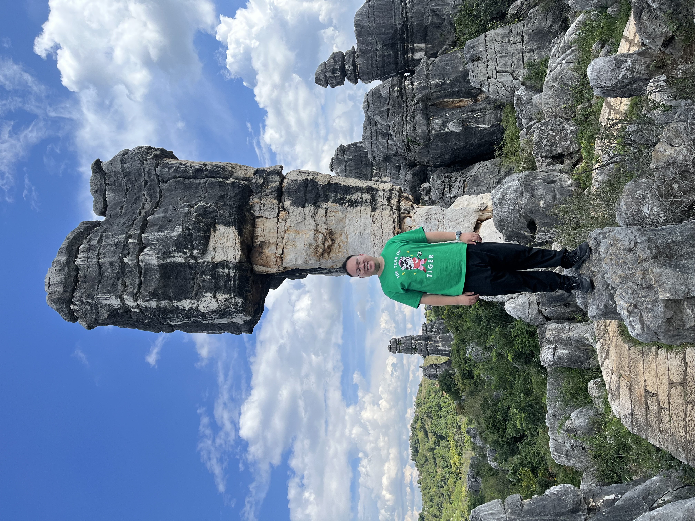

Periodicity and finite complexity in higher real K-theories
Joint work with Mike Hill, Guchuan Li, Yutao Liu, XiaoLin Danny Shi, Guozhen Wang and Zhouli Xu.
arXiv:2512.01161 [math.AT], 2025.
Associate Professor
School of Mathematical Sciences, Nanjing Normal University
I obtained my Ph.D. in mathematics from the University of Copenhagen in 2020 under the supervision of Jesper Møller.

My research interests lie in homotopy theory and combinatorial topology, especially in applying methods from equivariant homotopy theory to problems in chromatic homotopy theory.
Joint work with Mike Hill, Guchuan Li, Yutao Liu, XiaoLin Danny Shi, Guozhen Wang and Zhouli Xu.
arXiv:2512.01161 [math.AT], 2025.
Accepted by CDM.
Joint work with J. Liu, T. Zhang, Y. Zhang, and S. Sun.
Advances in Geo-Energy Research 20(2) (2026), 101–113.
Joint work with Guchuan Li and XiaoLin Danny Shi.
Geometry & Topology 29 (2025), 903–930.
Joint work with Hana Jia Kong, Guchuan Li, Yunze Lu, and Guozhen Wang.
Peking Mathematical Journal (2024).
Annals of Combinatorics 27, 67–85 (2023).
Joint work with Agnès Beaudry, Guchuan Li and XiaoLin Danny Shi.
Joint work with Gregory Arone and Guchuan Li.
First version available upon request.
2025.01–2027.12
National Natural Science Foundation of China (No. 12401084)
2026–2027 (Autumn Semester)
Lecturer in Linear Algebra and Differential Geometry.Nanjing Normal University.
2025–2026 (Spring Semester)
Lecturer in Probability and Statistics and Modern Algebra (joint with Prof. Haiyan Zhou).Nanjing Normal University.
2025–2026 (Autumn Semester)
Lecturer in Differential Geometry and Linear Algebra.Nanjing Normal University.
2024–2025
Lecturer in Advanced Mathematics (6 credits).Nanjing Normal University.
2023–2024
Lecturer in Advanced Mathematics (6 credits).Nanjing Normal University.
2021–2022 (Spring Semester)
Lecturer in Advanced Mathematics (4 credits).Nanjing Normal University.
2018–2019 (Block 1)
Teaching Assistant in Advanced Linear Algebra.University of Copenhagen.
2017–2018 (Block 1)
Teaching Assistant in Advanced Linear Algebra.University of Copenhagen.